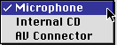

Pop-Up Menu Buttons
A pop-up menu button displays a list of items the user can select to change the state of an aspect of the application. A pop-up menu button consists of a single control. The left side of the button contains text that shows the current selection; the right side of the button shows a double triangle pointing up and down. The width of the pop-up button's menu should be equal to or larger than the full width of the largest text portion of the button. Figure 2-6 shows the pop-up menu button in its normal state before a user selects it.Figure 2-6 Pop-up menu button in normal state
When the user presses a pop-up menu button, a menu appears with the currently choice highlighted and indicated by a checkmark. The user can drag the highlighted area up and down over the menu to select a new item. Figure 2-7 shows a pop-up menu button with its list displayed.
The currently selected item in the list always appears at the level of the menu button, but the display of the other items depends on their relative position to the selection. In Figure 2-7, for example, the Microphone item is selected. Since it is the first item in the list, the other items appear below it. If the Internal CD item became the new selection, the display would change so that the next time the button was popped up, the Microphone item would appear above and the AV Connector item would appear below the selection.
If the user presses the pop-up menu button and releases the mouse button with the pointer outside the pop-up menu, the menu closes without changing the current selection. If the user releases the mouse button while the pointer is over a menu item, that item becomes the current selection and the pop-up menu button text is changed to reflect the new selection.
Figure 2-7 Pop-up menu button with displayed list

If the user clicks on the pop-up menu button and the pointer remains over the menu item for less than the user-set double-click time, the pop-up menu button becomes a sticky menu. See "Sticky Menus" (page 88) for information on this feature.
For information on laying out pop-up menu buttons in dialog boxes, see "Pop-up Menu Button Layout" (page 74).